3．导数
达朗贝尔是看出牛顿在本质上具有正确的导数概念的第一个人。在《百科全书》（Encyclopédie）中达朗贝尔明确地说，导数必须建立在应变量的差和自变量的差的比的基础上。这个看法再次系统地阐述了牛顿的最初和最后比。由于达朗贝尔的思想仍然受几何直观的束缚，他没有继续前进。在后来的50年中他的继承者们仍然不能给出导数的明确定义。连泊松（Simeon-Denis Poisson）都相信，小于任何给定的无论多小的正数的非零正数是存在的。
波尔查诺第一个（1817）把f（x）的导数定义为当Δx经由负值和正值趋于0时，比
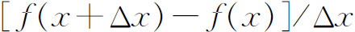
无限接近地趋向的量f′（x）。波尔查诺强调f′（x）不是两个0的商，也不是两个消失了的量的比，而是前面指出的比所趋近的一个数。柯西在他的《无穷小分析教程概论》(16)中，用和波尔查诺同样的方式定义导数。然后他通过把dx定义为任一有限量而把dy定义为f′（x）dx，从而把导数的概念和莱布尼茨的微分统一起来(17)。换句话说，他引入两个量，根据定义，它们的比是f′（x）。微分通过导数就有了意义，但只是一个辅助的概念，在逻辑上没有它也行，但是作为思考或书写的手段是方便的。柯西还指出，整个18世纪所用的微分表达式的含义就是通过导数来表示的。
然后他通过平均值定理，即
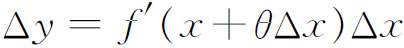
，其中0＜θ＜1，来阐明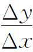
和f′（x）之间的关系。拉格朗日已经知道这个定理（第20章第7节）。柯西在平均值定理的证明中用到了f′（x）在区间（x，x＋Δx）上的连续性。虽然波尔查诺和柯西已经（多少）严密化了连续性和导数的概念，但是柯西和他那个时代的几乎所有的数学家都相信，而且在后来50年中许多教科书都“证明”，连续函数一定是可微的
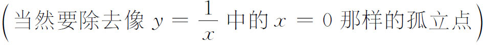
。波尔查诺确实了解到连续性和可微性之间的区别。在他的《函数论》（Funktionenlehre）中（他在1834年写这本书，但没写完也没有发表）(18)，他给出了一个在任何点都没有有限导数的连续函数的例子。波尔查诺的例子像他的其他著作一样，没有引起人们的注意(19)。即使他在1834年发表这个例子也可能不会产生什么影响，因为他所举的例子是一条曲线，没有解析表达式，而对那个时期的数学家来说，函数仍然是由解析表达式给出的实体。最终讲明白连续性和可微性之间的区别的例子，是由黎曼在取得大学教授资格的论文《试用短文》（Habilitationsschrift）中给出的，这是他为了取得格丁根的一个无薪大学教师（其报酬直接来自学生的学费）职位（privatdozent）而在1854年写的论文，《用三角级数来表示函数的可表示性》（Über die Darstellbarkeit einer Function durch eine trigonometrische Reihe）(20)。［这是作为应征讲演而写的几何基础方面的论文（第37章第3节）。］黎曼定义了下面的函数。令（x）表示x和最靠近x的整数的差，如果x在两个整数的中点，则令（x）＝0。于是
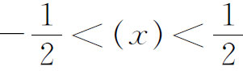
。f（x）定义为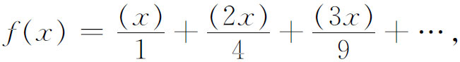
这个级数对所有的x值收敛。然而（对于任意的n）对
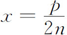
，其中p是一个和2n互质的整数，f（x）是间断的而且具有一个数值为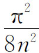
的跳跃。在x的所有其他数值处，f（x）是连续的。而且在每个任意小的区间上f（x）有无穷多个间断点。尽管如此，f（x）却是可积的（第4节）。而且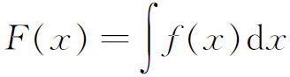
对一切x连续，但在f（x）的间断点处没有导数。这个例子直到1868年才发表，在这之前这个病态函数没有引起多大的注意。连续性和可微性之间的一个甚至是更为惊人的区别，是由瑞士数学家塞莱里耶（Charles Cellérier，1818—1889）指出的。1860年他给出了一个连续但处处不可微的函数的例子，就是
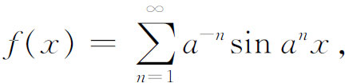
其中a是一个大的正整数。但是这个例子直到1890年(21)才发表。最引起人们注意的例子，是由魏尔斯特拉斯给出的。早在1861年他在讲课中已经确认，想要从连续性推出可微性的任何企图都必定失败。1872年7月18日，在柏林科学院的一次讲演中，他给出了处处不可微的连续函数的经典例子(22)。魏尔斯特拉斯在1874年的一封信中把他的例子告诉了杜波依斯-雷蒙（Paul Du Bois-Reymond），而由后者首先发表出来(23)。魏尔斯特拉斯的函数是
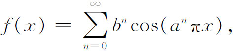
其中a是一个奇整数而b是一个小于1的正的常数，而且
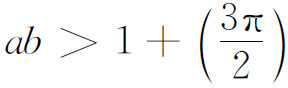
。这个级数是一致收敛的，因而定义一个连续函数。魏尔斯特拉斯的例子推动人们去创造更多的函数，这些函数在一个区间上连续或到处连续，但在一个稠密集或在任何点上都是不可微的(24)。发现连续性并不蕴含可微性，以及函数可以具有各种各样的反常性质，其历史意义是巨大的。它使数学家们更加不敢信赖直观或者几何的思考了。